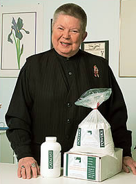
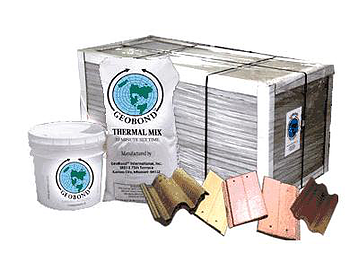

Biography
Patricia Billings studied art at Amarillo College, specialized in plaster of Paris sculptures. The turn in her life from art to technology came in the 1970s, when a swan sculpture, after months of hard work, fell and broke into pieces.
She knew that Renaissance sculptors used a cement additive to give their plaster longevity, so she set out to create a modern equivalent. After 8 years of experimenting in her basement, she succeeded, inventing a milky additive that acts as a catalyst. When added to a mixture of gypsum and concrete, it creates an indestructible plaster. But there was more, a scientist friend of Billings realized that her new material was also incredibly resistant to heat. Billings returned to her lab, and in eight more years, she had created Geobond.
Billings won 2 patents for her work & true to her independent spirit, she has turned down $20 million buyout offer from a company because she kept the complete recipe a secret. GeoBond has also come to produce unexpected benefits, including serving as a nontoxic alternative to asbestos, which has been deemed a cancer-causing agent by the FDA. It is used today for roof repair. Though the greatest potential of her invention has been borne out in the engineering industry, Billings’s first love has always been art, and in keeping with her passion she has recently developed a new product called CraftCote. This utilizes the GeoBond technology in an art-centric manner.